Design System
One token-based system for a bilingual product. Arabic and English, light and dark, from the first color variable to the last line of developer handoff.
I led it end to end: audit, research, foundations, a 49-component library, documentation, testing and handoff, working closely with engineering and product.
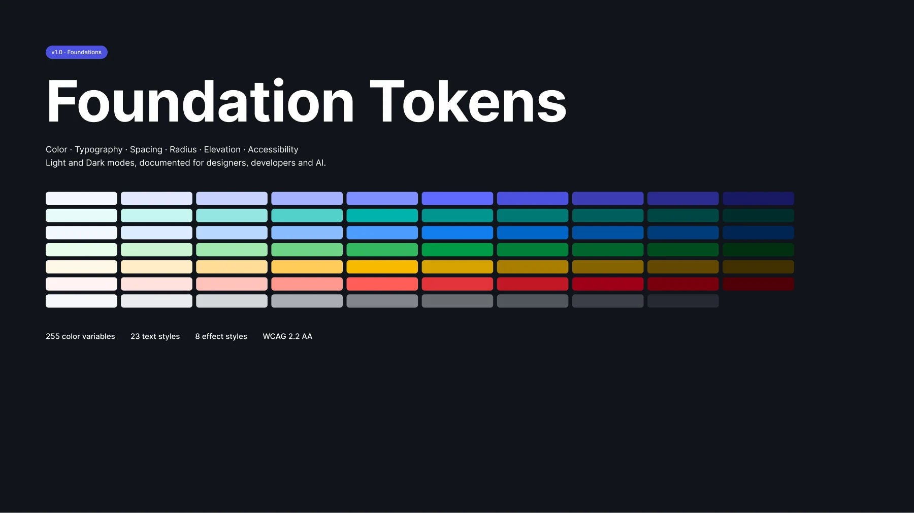
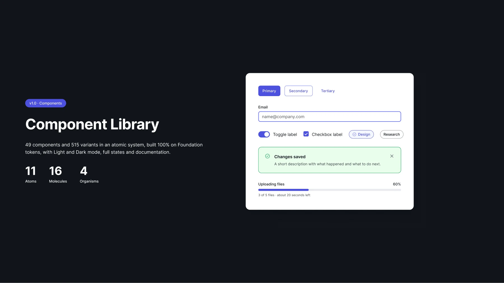
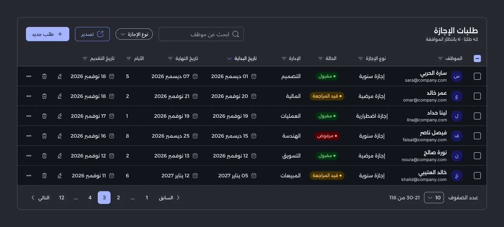
Every team was solving the same problems in its own way. Buttons that looked alike but behaved differently, colors picked by eye, and Arabic screens flipped by hand the night before a release.
Several products, no shared language
The platform grew fast. Each product team built its own screens, so the same pattern ended up designed and coded several times. That cost us speed, consistency and trust, and it hit Arabic users hardest.
Inconsistent UI
The same action looked and behaved differently from one product to the next.
Slow delivery
Designers redrew and developers rebuilt the same components every sprint.
Arabic as an afterthought
RTL screens were mirrored by hand, with icons pointing the wrong way and fonts swapped late.
No shared names
Figma layers did not match code, so handoff meant redlines and long threads.
No dark mode, weak contrast
Hard-coded colors made dark mode impossible and contrast was checked late, if at all.
Five rules we agreed on before drawing a single button
Tokens first
No raw values. If it is not a token, it is a bug.
Bilingual by default
Every component ships in LTR and RTL, not just English.
Accessible by default
AA contrast verified in both themes before anything ships.
One name everywhere
The same name in Figma, in code and in conversation.
Never detach
Switches and slots cover real cases, so nobody has to break a component.
From audit to adoption
A design system is a product that serves other products. I ran it like one: research, a roadmap, releases and feedback loops.
Audit
I collected every screen across the products and grouped them by pattern. Seeing near-duplicate buttons, tables and date pickers side by side made the case without a slide deck.
Research
I benchmarked Material 3, IBM Carbon, Atlassian and Shopify Polaris for naming and structure, and interviewed designers and developers about where work got stuck.
Foundations
Ten-step color ramps, semantic tokens, type, spacing, radius and elevation, with Light and Dark modes and an Arabic typography mode.
Components
An atomic library, built atoms first: every state, size and direction, all bound to tokens.
Documentation
Every component page explains anatomy, usage, do's and don'ts, accessibility and the tokens it uses. Written for designers, developers and AI tools.
Testing
Accessibility checks, usability sessions with designers, RTL reviews with native Arabic speakers and visual QA with engineering.
Handoff and governance
Tokens exported to CSS and JSON, code names on every variable, versioned releases and an open contribution model.
A language before a library
Components change. Decisions should not. So the system starts with three layers of tokens, and a naming pattern anyone can read out loud.
primary/70The raw palette. Hidden from designers so nobody picks a hex by eye.
background/primary/boldThe meaning. It points to a different primitive in Light and Dark.
Button / PrimaryComponents only use semantic tokens, so a theme change reaches everything.
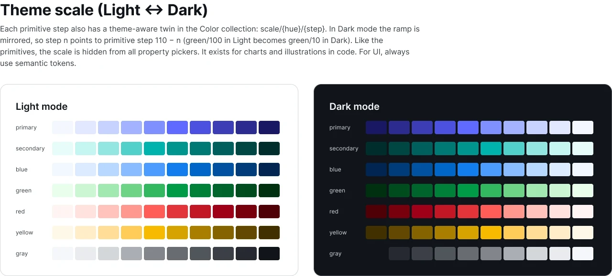
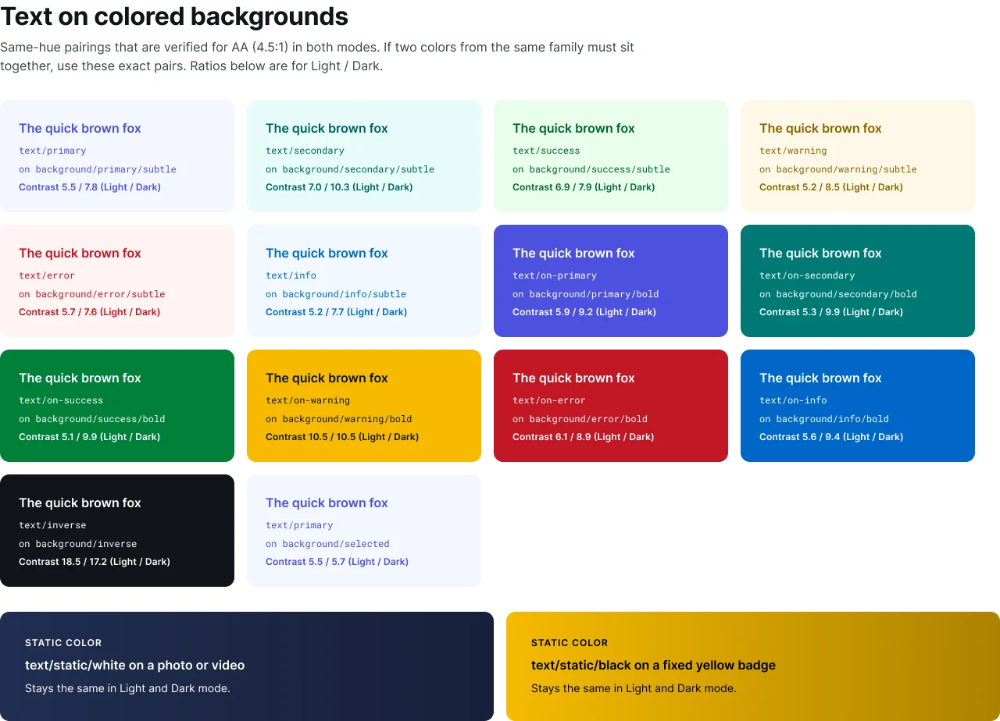
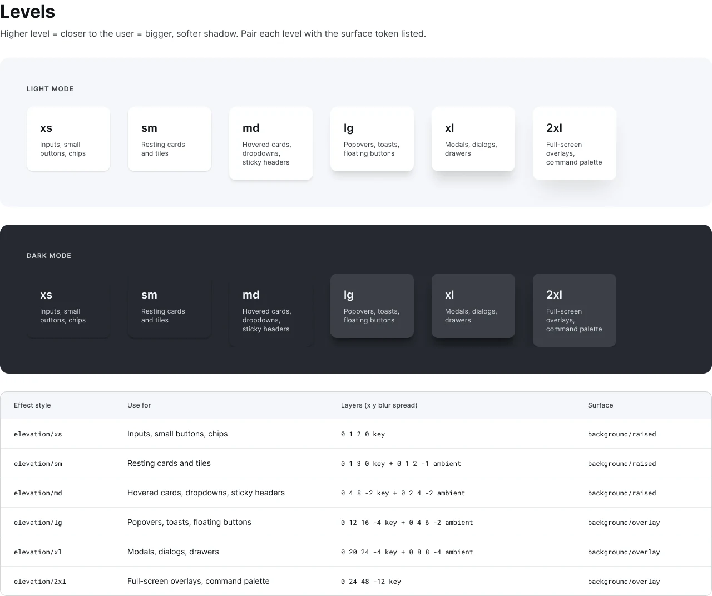
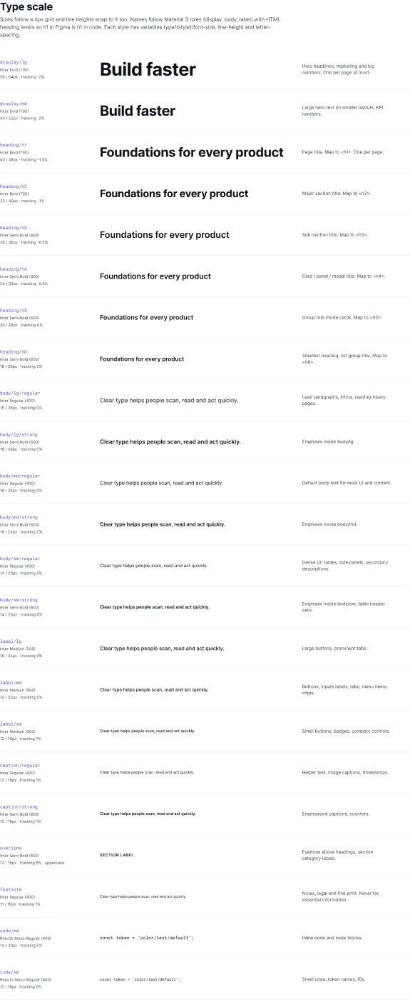
Light or dark. Arabic or English. Same component.
Designers never redraw for a theme or a language. They flip a mode or a property and the tokens do the rest. Switch it yourself.
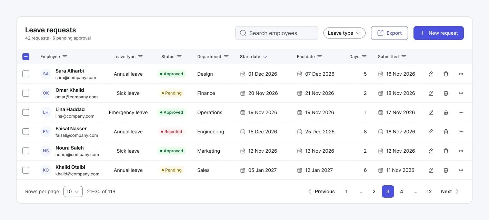
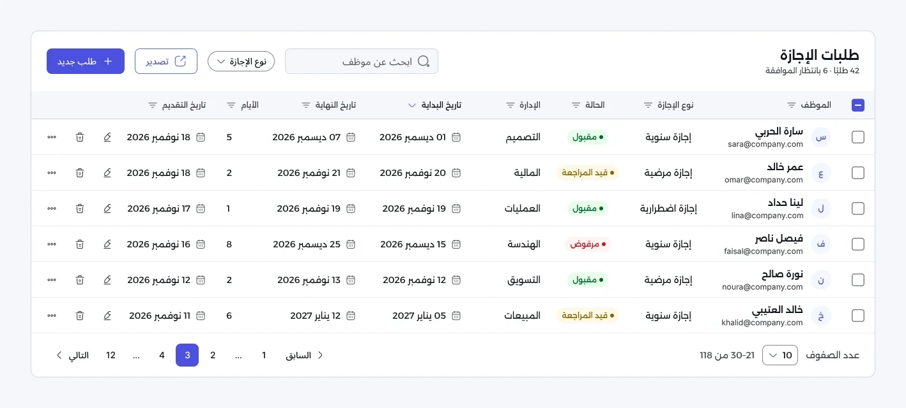
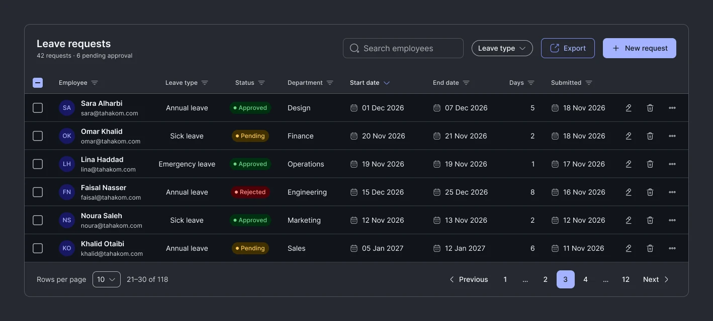
Real screens from the Figma library. The data is sample content.
Atoms, molecules, organisms
Built in dependency order, so a fix to Button reaches every modal, table and toolbar that uses it.
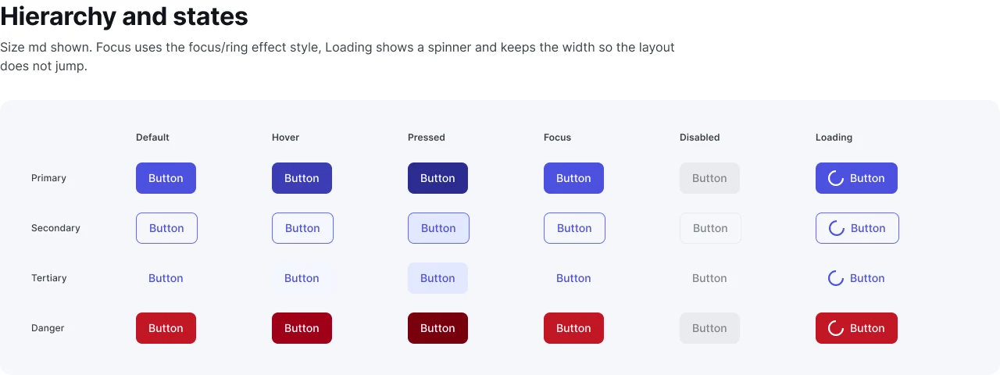
Button
Primary, Secondary, Tertiary and Danger, with six states and a loading state that keeps its width.
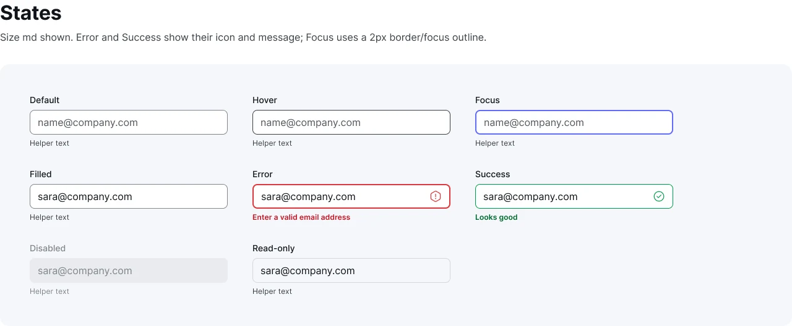
Input field
Eight states including error, success and read-only, with helper text tied to each one.
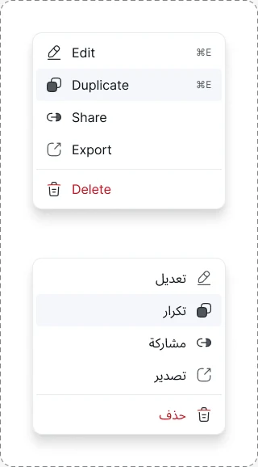
Dropdown menu
Nested items switch to RTL automatically, keeping their icons and shortcuts.
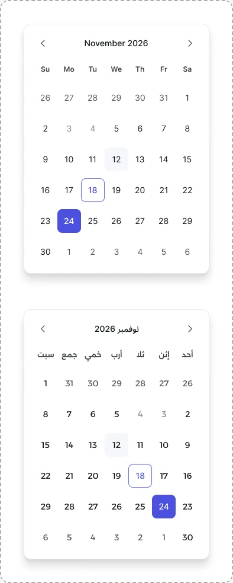
Date picker
The grid, weekdays and navigation arrows all follow the reading direction.
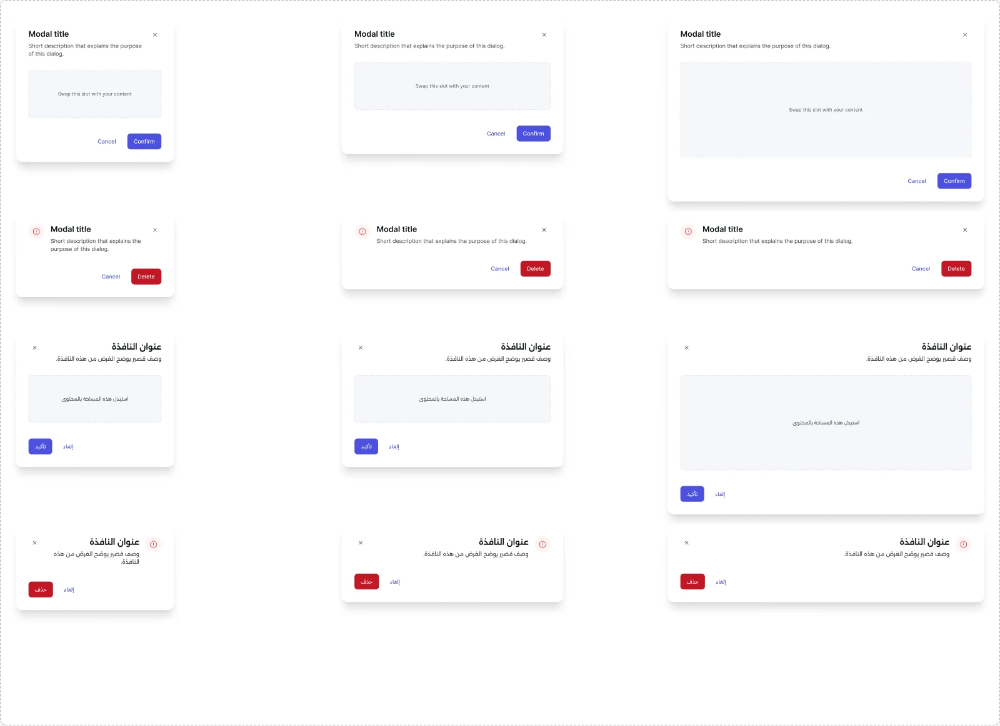
Modal
Three sizes, a danger variant and a content slot, in both directions.
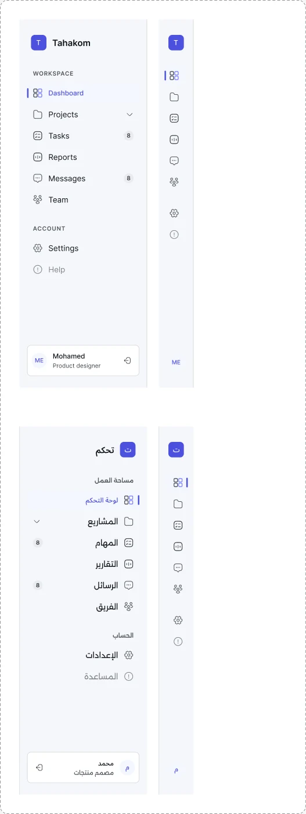
Sidebar
Expanded and collapsed, with nested navigation items and badges.
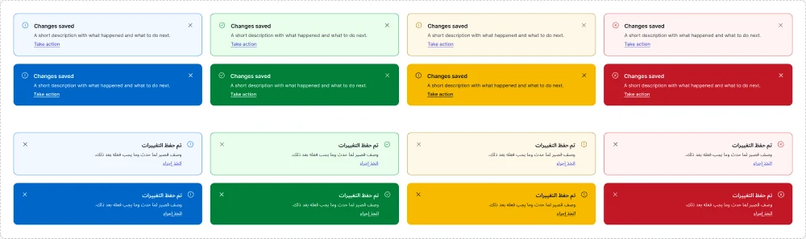
Alert and toast
Four status colors in subtle and bold, each pair contrast-checked.
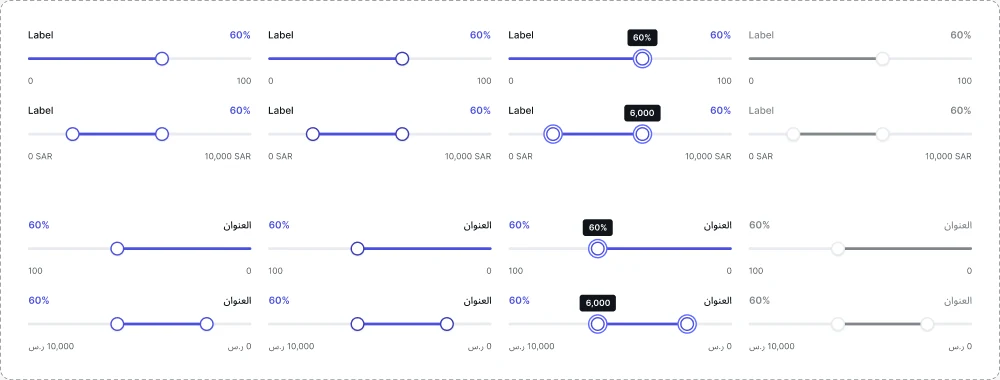
Slider
Single and range, where the fill runs from the right in Arabic.
Tables were the hardest problem, so I rebuilt them around columns
Most Figma tables are built in rows. Change one cell and its column drifts out of line. Designers ended up detaching tables to fix alignment, which broke every future update.
Row based
Each row sizes itself, so cells drift and nobody trusts the table.
Column based
One component per column holds the header and up to ten cells, so alignment is locked.
Pick a type per column
Each column has a Type property. Rows stay in sync through one Rows setting on the table, and each column can be turned on or off, up to ten side by side.
A toolbar made of switches
The toolbar is its own component, exposed inside the table. Title, search, filter and both buttons are switches, and a slot takes tabs or a date range. No detaching needed.
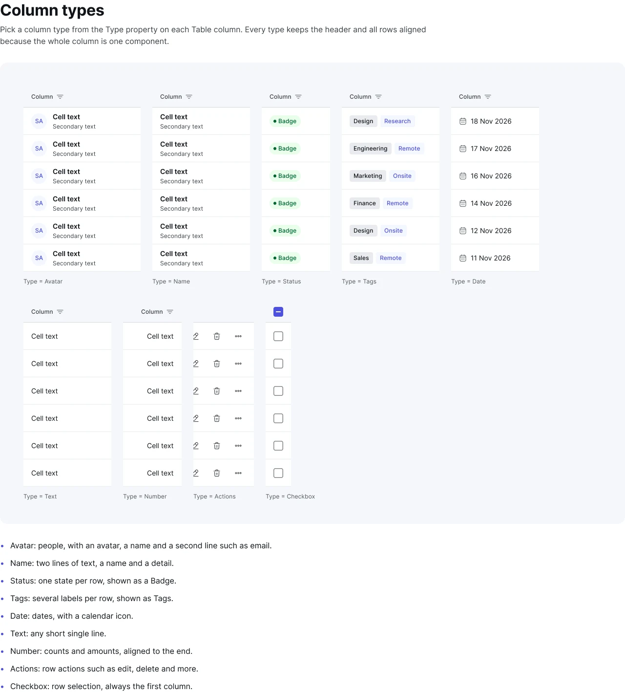
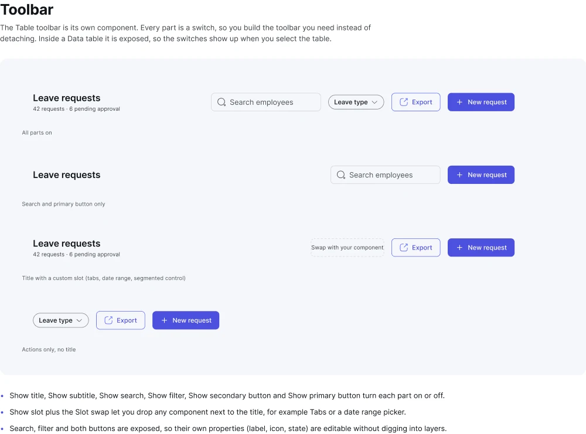
Arabic is not a translation. It is a direction.
Every component has a Direction property. RTL is not a flipped image: each variant is rebuilt with the right rules, so designers get production-ready Arabic screens. Drag to compare.
Docs people actually open
Every component lives on its own page with the same structure, so people learn where to look once.
- Hierarchy, states and sizes
- Anatomy and usage, with do's and don'ts
- Accessibility notes and the tokens used
- An Arabic RTL example on every page
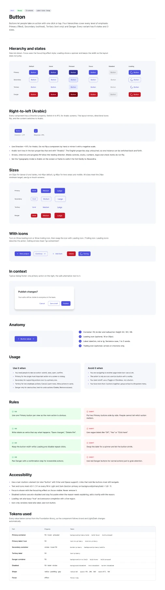
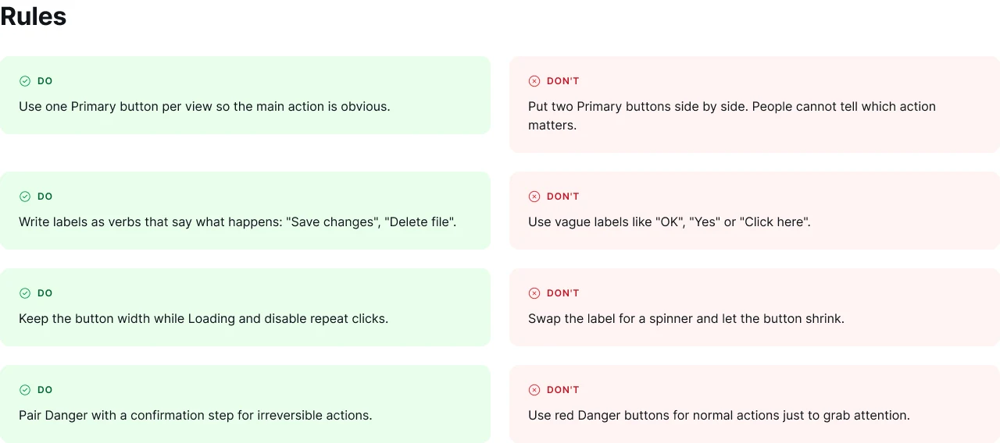
Rules are written as pairs: what to do and the mistake it prevents.
A system is only as good as its conversations
I spent as much time with engineers, product managers and stakeholders as I did in Figma. Each group needed something different from the system.
- Same names in Figma and codeEvery variable carries its CSS name, so background/primary/bold is var(--color-background-primary-bold) in code.
- Component properties match propsType, Size, State and Direction in Figma map one to one to component props.
- A weekly design and dev syncWe reviewed what shipped, what drifted and what was next, in 30 minutes, with Figma and the browser side by side.
- Pairing on hard componentsTable, date picker and RTL rules were designed with a frontend engineer, not handed over.
If a developer has to ask what a color is called, the system failed, not the developer.How I framed naming for the team
- A roadmap ordered by reuseComponents used across the most screens came first, so the system paid off early.
- One-page proposalsNew components start as a short proposal: the problem, the screens that need it and the cost of not building it.
- Release notes in plain languageWhat changed, who is affected and what to do, with no jargon.
- Trade-offs made visibleBuild now or later, custom or shared. Product managers made the call with the facts on the table.
I never pitched the system as design work. I pitched it as fewer bugs and faster releases.My line in roadmap reviews
- Show, do not presentLive demos of a screen switching to Arabic or dark mode in one click did more than any slide.
- Adoption tracked openlyWe tracked which screens used library components, so progress was visible to everyone.
- Brand and accessibility reviewsBrand owners and accessibility reviewers signed off on foundations before components were built.
Stakeholders do not buy tokens. They buy confidence that every product looks and works like one organization.What I kept in mind for leadership updates
- Office hoursA weekly open slot for questions, reviews and ideas for the library.
- A clear way to contributePropose, review, design, build, document, release. Anyone can start the flow.
- Onboarding in one fileA Read me page explains structure, naming and how to use the library in the first hour.
A component nobody asked for is clutter. Every addition starts from a real screen.Our rule for new components
Tested by the people who use it
A system has two kinds of users: the people building with it and the people using what gets built. I tested for both.
Accessibility
Every text and background pair checked against WCAG 2.2 AA in both themes: 4.5:1 for text, 3:1 for icons and borders.
Usability with designers
Designers built a real screen with the library while I watched where they searched, hesitated or wanted to detach.
RTL review
Native Arabic speakers reviewed mirrored screens for icon direction, dates, numbers and font readability.
Visual QA with engineering
Coded components compared against Figma in light, dark, LTR and RTL before each release.
Pilot team
One product team adopted the library first. Their feedback shaped the release the other teams got.
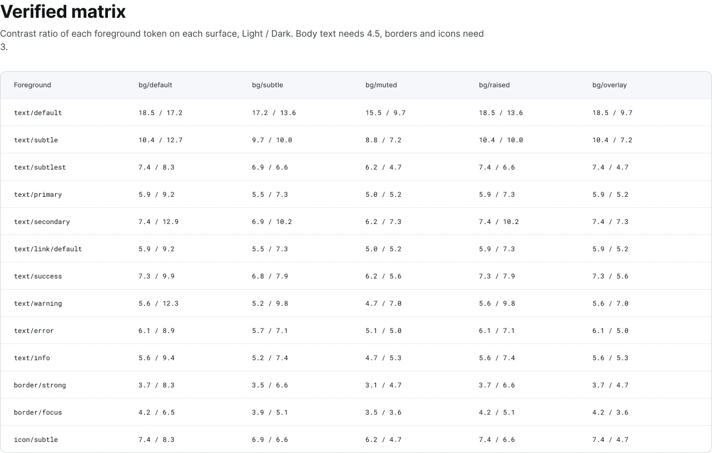
The verified matrix: every foreground token on every surface, Light and Dark.
Handoff became a conversation about behavior, not pixels
Because every value is a token with a code name, developers read the design instead of measuring it. Logical CSS properties meant RTL came almost for free.
- Tokens exported as CSS variables and JSON
- Code name on every Figma variable
- Anatomy and specs on every component page
- States, sizes, LTR and RTL all covered
- Accessibility notes for each component
- Changelog and a version tag on every release
How a new component gets in
What changed
One source of truth for every product team, in Figma and in code.
Arabic and English from the same component, with no manual mirroring.
Dark mode became a setting, not a project.
Accessibility built into the tokens instead of checked at the end.
Tables that stay aligned, and toolbars nobody needs to detach.
New team members productive from the Read me on day one.
A design system isn't a project. It's a product, serving products.Nathan Curtis, design systems consultant
What I learned
Start with naming. Every hard argument later was really a naming argument. Ship small and early: a pilot team taught me more than a month of planning. And governance is product work. A system without an owner and a release rhythm slowly drifts back into chaos.
What is next
Code Connect, so developers see real code next to every component in Figma. Motion tokens for consistent transitions. And a data visualization palette tested for color blindness in both themes.